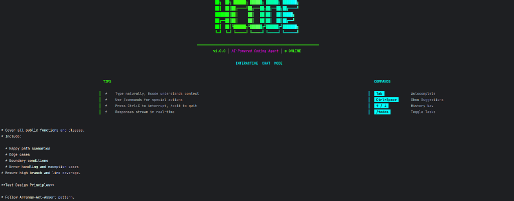

Standard agents use System 1 thinking (fast, reactive). Hcode uses System 2 (slow, deliberative).

Simulating futures before committing to one.
Before writing a file, Hcode simulates the import implications. "If I change valid_utils.py, will user_auth.py break?" It traverses the dependency graph to answer this.
When a thought branch leads to a logical contradiction or high uncertainty, Hcode "prunes" it and returns to the parent node, trying a different strategy.
Generative models are enthusiastic liars. The Critic is the buzzkill.
Hcode switches roles internally. One prompt generates the solution, another prompt (with "Senior Architect" persona) ruthlessly critiques it for security, performance, and best practices.